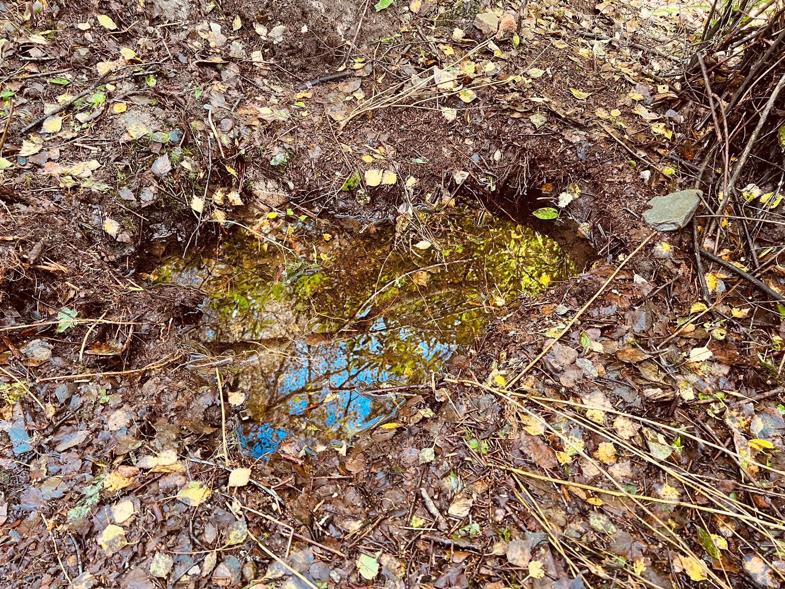

A few things to note:
This flooding took place after the recent spell of bad weather and after the SSE crew cleared the small burn above my house (shown on map below).
As you can see from the video:
This is what it looks like when the flood water tops the sandbags that I use to direct the floodwater into my house drainage. I have additional sandbags down the side of my house to keep the water from getting under the house and damaging the stone.
This is what the SSE land looks like above my house during a flooding incident. This water then pours into my garden.
The video below is a clearer view of some of the water running into my garden from the SSE land above.
The image below shows what the SSE land directly above my house currently looks like on a dry day (a hole of water reflecting the trees above).
Your colleague Neil had a look at the area and thought it could be a burst large field drain, which would explain the amount of water cascading into my garden.
Neil dug down, but in the time available, he couldn't find a pipe. We think it could be many feet down.
As you can see in the picture below, this area/hole is always full of water. Even after our very dry summer this year, the area had water in it.
In the OS map above, the neon-green area is my property
Previously I mentioned that the flooding is causing damage to my house. This is a picture of my house wall being eroded away when the flooding tops the sandbags.
The video below from 1min 25sec shows a worse flooding event from last year, where I had to remove a sandbag to let the water flow down the side of the house to stop it pooling behind the house and seeping down and into the property.
To finish this page off, here is some footage I caught from another flooding event from last year that was even worse.